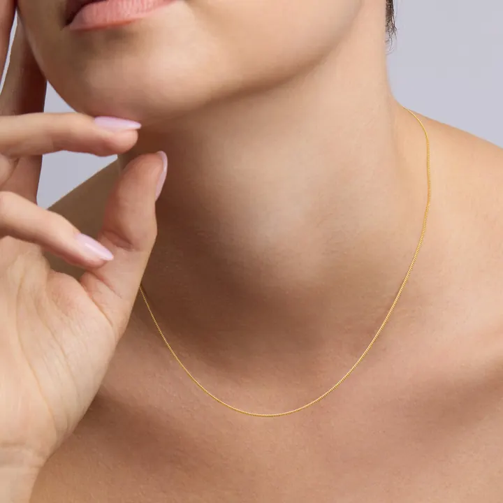

鉑金鑑定：密度與酸性的雙重考驗
鉑金是「最重最純」的白色金屬——鑑定它的關鍵，是那 21.45 的密度。

核心定義
鉑金鑑定四招：① 印記（Pt950/Pt900）；② 密度（21.45，比黃金更重——同體積明顯更沉）；③ 耐酸性（硝酸/鹽酸不溶）；④ XRF 光譜定論。鉑金的高密度，讓「掂重」成為最直接的特徵。
鉑金 vs 白 K 金 vs 鈀金：鉑金最重（21.45）、白 K 金中等（約 15）、鈀金最輕（12.0）——掂一掂，三種白色金屬立刻分家。
特徵與分類
| 金屬 | 密度 | 耐酸 | 印記 |
|---|---|---|---|
| 鉑金 | 21.45 | 極耐 | Pt950 |
| 白K金 | 約15 | 耐（金） | 18K/750 |
| 鈀金 | 12.0 | 耐 | Pd950 |
| 銀 | 10.5 | 硝酸溶 | 925 |
鉑金的「本色白」vs 白 K 金的「鍍銠白」：鉑金磨損後依然白（本色）；白 K 金鍍層磨損後露微黃——這是佩戴數年後最明顯的差異。鉑金的純度（95% 鉑）也遠高於白 K 金（75% 金）。
科學原理
鉑金的密度 21.45 g/cm³ 是所有常用珠寶金屬之最——比黃金（19.3）重 11%。同樣大小的戒指，鉑金明顯更沉——「壓手感」是鉑金的物理簽名。
鉑的化學惰性：不溶於硝酸、鹽酸、硫酸（只溶於王水與高溫熔融鹽）——酸測試中鉑金「紋絲不動」。XRF（X射線螢光）可無損測出鉑含量與合金成分——現代珠寶店的標準工具。
鑑定與鑑別方法
- 看印記：Pt950/Pt900
- 掂密度：比黃金更重
- 酸測試：耐酸
- 看磨損：本色白（vs 白K金露黃）
- XRF：無損定論
市場行情與保養建議
行情：鉑金價格常低於黃金（供需結構）——但鉑金首飾的工藝費高（熔點高、加工難）。「鉑金比黃金貴」是舊印象，現代鉑金價常貼近或低於金價。
選購：珠寶選鉑金（純白不過敏，婚戒主流）；投資選鉑金條/幣（關注工業與汽車催化需求）。鉑金的「貴氣」，在純不在價。
常見誤區
鉑金價格常低於黃金（2020 年代多數時間）——「鉑貴於金」是舊時代的現象。價值看市場供需，不是看名字。
鉑金飾品常用 Pt950（95% 鉑）——純鉑太軟，需合金強化。Pt950 是珠寶鉑金的標準純度。
冷知識
汽車催化轉化器、化工反應都靠鉑的催化——珠寶只是鉑的用途之一。你車子的排氣管，可能比你的戒指用更多鉑。
比黃金（1064°C）高得多——鉑金首飾的加工難度高、工藝費貴，是「難搞」的高貴。
反直覺觀點
價格由供需決定——鉑金工業需求波動、黃金避險需求穩定——「更貴更純」的鉑金，市場定價輸給黃金。
純鉑不過敏，但 Pt900（90% 鉑＋其他金屬）可能含鈀/鈷——極少數人對合金敏感。純度高，才更安全。